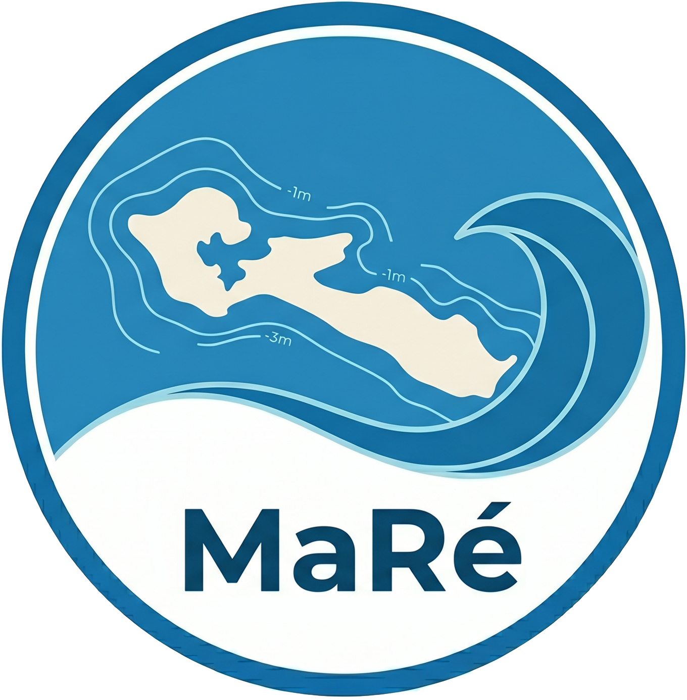

‹
--
›
Carnet
Coeff --
--:--
Marée -- m
‹
Page 1 / 1
›
‹
--
›

Port
PMTiles
composite z18
z15 GitHub non masqué
autre...
Zoom max natif
Charger PMTiles
IGN
Eau
Opacité eau
220%
Observation
×
Lieu
Espèce
Plage de pêche
Au sec
Sous l'eau
Eau minimale
50 cm
Supprimer
Annuler
Enregistrer